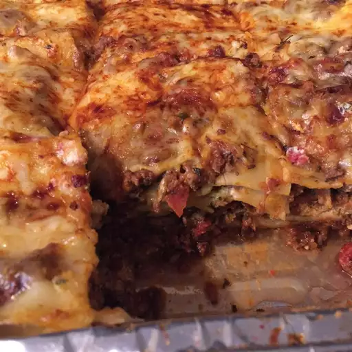

Gordo's Best of the Best Lasagna

The finished product: Gordo's Best of the Best Lasagna
This lasagna recipe is the best! Adapted from several of the better lasagna dishes I've made. I had it tested by a couple who previously owned an Italian restaurant — they were very impressed! This lasagna dish will become a regular in our household. Serve with a mixed salad, Italian bread, and a delightful red wine.
Ingredients
- ½ pound bulk spicy pork sausage
- ½ pound ground beef
- ½ cup minced onion
- 3 cloves garlic, minced
- 1 (32 ounce) jar tomato basil pasta sauce
- 1 (15 ounce) can tomato sauce
- 1 (14.5 ounce) can diced tomatoes
- 1 cup dried parsley, divided
- ¼ cup Italian seasoning
- 1 tablespoon white sugar
- 1 ½ teaspoons sea salt
- ½ teaspoon coarsely ground black pepper
- 1 (16 ounce) package lasagna noodles
- cooking spray
- 3 cups ricotta cheese
- 1 cup grated Parmesan cheese
- 1 cup shredded sharp Cheddar cheese (such as Cabot® Seriously Sharp)
- 3 large eggs, beaten
- 1 ½ cups shredded mozzarella cheese, or to taste
Steps
- Cook and stir sausage, beef, onion, and garlic in a large, deep skillet over medium heat until browned. Stir in pasta sauce, tomato sauce, diced tomatoes, 3/4 cup parsley, Italian seasoning, sugar, salt, and pepper; bring to a simmer. Reduce the heat to low and cook, stirring occasionally, until flavors blend, about 30 minutes.
-
Meanwhile, bring a large pot of lightly salted water to a boil. Cook lasagna in the boiling water, stirring occasionally, until cooked through but firm to the bite, about 8 minutes. Drain and rinse in cold water.
-
Preheat the oven to 350 degrees F (175 degrees C). Spray a 9x13-inch baking dish with cooking spray.
-
Stir ricotta, Parmesan, Cheddar, eggs, and remaining 1/4 cup parsley together in a large bowl until smooth.
-
Spread 1 cup tomato sauce in the bottom of the prepared baking dish. Cover sauce with a layer of lasagna noodles, then spread some ricotta mixture over top. Spread a layer of tomato sauce over ricotta, then place another layer of noodles. Repeat the layering procedure once more. Spread remaining sauce over the final layer of noodles. Sprinkle mozzarella cheese over top. Cover the baking dish with aluminum foil.
-
Bake in the preheated oven until lasagna is hot throughout and bubbling, 30 to 40 minutes. Remove the aluminum foil and continue to bake until cheese is golden, about 10 more minutes.
-
Remove from the oven and let cool for 10 minutes before serving.
Home